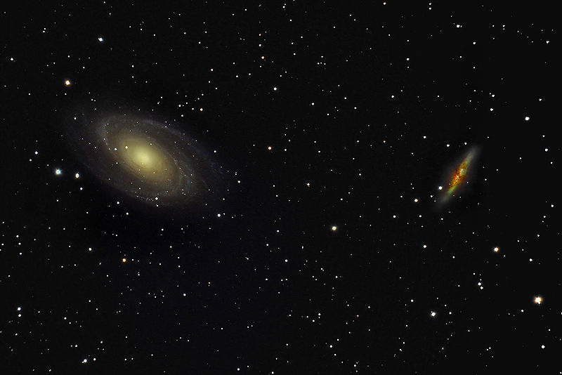

About 12 million ly away. Has an Active Galactic Nucleus and a super massive black hole of 70 million solar masses. There are lots of star formation regions in the spiral arms. This is probably caused by interaction with M82.
Closeness to M82 make it a nice object for amateur telescopes. Visible in binoculars.

Part of the M81 group, a group of 34 galaxies some 11.7 million ly away. The group also contains as an outlying galaxy, NGC2403, a fine 8th magnitude spiral galaxy in neighbouring Camelopardis.
Image Credit: NASA, ESA and the Hubble Heritage Team (STScI/AURA)
Image Credit: Anttler at en.Wikipedia